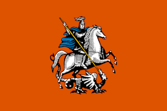

{kind=link}
{kind=link}
| 伊比利亚 |
| 法兰西 |
| 低地 |
| 不列颠 |
| 北欧及波罗的 |
| 中欧 |
| 北德意志 |
| 南德意志 |
| 意大利 |
| 巴尔干及安纳托利亚 |
| 东欧 |
 | |
|---|---|
| 莫斯科 | |
| 政府等级 | |
| 主流文化 | |
| 首都 | |
| 政体 | 俄罗斯公国 |
| 国教 | |
| 科技组 | |
| 莫斯科的理念 |
此信息可能已落后版本，最后更新于1.35 ----
|
| +1 外交关系 +10% 冲击伤害 |
| +25% 陆军上限
|
|
|

莫斯科（英文：Muscovy）是欧洲东北部的一个国家。它们处于最终成立  俄罗斯的最有利位置。开局时，它拥有 5 个附庸国：
俄罗斯的最有利位置。开局时，它拥有 5 个附庸国： 别洛奥泽罗、
别洛奥泽罗、 彼尔姆、
彼尔姆、 普斯科夫、
普斯科夫、 罗斯托夫和
罗斯托夫和  雅罗斯拉夫尔。
雅罗斯拉夫尔。
在历史上，莫斯科大公国在1444年仍是  大帐的朝贡国。然而最近几十年，蒙古人已经几乎无法对莫斯科和其它公国进行任何有效的控制。尽管蒙古的统治已经衰落，但是直到1480年，莫斯科大公伊凡三世在乌格拉河对峙中击败
大帐的朝贡国。然而最近几十年，蒙古人已经几乎无法对莫斯科和其它公国进行任何有效的控制。尽管蒙古的统治已经衰落，但是直到1480年，莫斯科大公伊凡三世在乌格拉河对峙中击败  大帐，莫斯科才彻底粉碎了所谓的“鞑靼枷锁”，并在1502年与
大帐，莫斯科才彻底粉碎了所谓的“鞑靼枷锁”，并在1502年与  克里米亚汗国联盟将其彻底摧毁。在接下来的数十年间，莫斯科大公国继续对其它罗斯公国的兼并和对南方鞑靼国家的征服；1547年，伊凡四世将自己加冕为“全罗斯人的沙皇”，建立了统一的
克里米亚汗国联盟将其彻底摧毁。在接下来的数十年间，莫斯科大公国继续对其它罗斯公国的兼并和对南方鞑靼国家的征服；1547年，伊凡四世将自己加冕为“全罗斯人的沙皇”，建立了统一的  俄罗斯国家。在霸业DLC中，鞑靼枷锁的具体表现形式是直到鞑靼枷锁被彻底粉碎之前，每年必须支付的贡金或蒙古人的劫掠。
俄罗斯国家。在霸业DLC中，鞑靼枷锁的具体表现形式是直到鞑靼枷锁被彻底粉碎之前，每年必须支付的贡金或蒙古人的劫掠。
莫斯科的事件主要与鞑靼枷锁及莫斯科内战相关。
俄罗斯事件中有小部分与莫斯科共用。
莫斯科可以成立  俄罗斯。
俄罗斯。
|
|
这条信息可能已不适合当前版本，最后更新于1.35。 |
通过征服以及外交，俄罗斯已经成功从小聚落转变为一个大公国。经过几次东征，蒙古汗国也终于被征服，一个由沙皇统治的集权式俄罗斯国家崛起了。来自西欧的影响正帮助我们实现现代化，改革我们的国家。同时，我国也会采用西式教育。
潜在需求
|
接受 |
效果
| |
AI决议因子：
当DLC 霸业开启时，莫斯科使用豪华的霸业任务。注意，由
霸业开启时，莫斯科使用豪华的霸业任务。注意，由  莫斯科，
莫斯科，  诺夫哥罗德或其他国家成立的俄罗斯任务有所不同。
诺夫哥罗德或其他国家成立的俄罗斯任务有所不同。
当DLC 霸业未开启而
霸业未开启而 第三罗马开启时，莫斯科使用第三罗马任务，许多任务在成立俄罗斯后会沿用。
第三罗马开启时，莫斯科使用第三罗马任务，许多任务在成立俄罗斯后会沿用。
当两个DLC均未开启时，莫斯科只能使用较简单的基础任务。
莫斯科开局时在罗斯诸公国拥有无与伦比的实力，AI在游戏中一般也能轻易地成立俄罗斯。许多独特的任务给予了玩家大量土地的宣称，给迅速扩张提供了有力保障。
莫斯科开局拥有诸多邻国，包括附庸  彼尔姆、
彼尔姆、 雅罗斯拉夫尔、
雅罗斯拉夫尔、 别洛奥泽罗、
别洛奥泽罗、 罗斯托夫和
罗斯托夫和  普斯科夫，小国
普斯科夫，小国  特维尔、
特维尔、 奥多耶夫和
奥多耶夫和  梁赞，强国
梁赞，强国  立陶宛、
立陶宛、 诺夫哥罗德、
诺夫哥罗德、 喀山、
喀山、 大帐、
大帐、 诺盖、
诺盖、 克里米亚、
克里米亚、 利沃尼亚骑士团和
利沃尼亚骑士团和  瑞典。接下来会依次介绍诸国。
瑞典。接下来会依次介绍诸国。
 彼尔姆、
彼尔姆、 雅罗斯拉夫尔、
雅罗斯拉夫尔、 别洛奥泽罗、
别洛奥泽罗、 罗斯托夫和
罗斯托夫和  普斯科夫都是莫斯科的东正教附庸。除彼尔姆和普斯科夫外，其他三个公国都是留里克王朝统治。彼尔姆是其中最大的一个公国，但他们有一些
普斯科夫都是莫斯科的东正教附庸。除彼尔姆和普斯科夫外，其他三个公国都是留里克王朝统治。彼尔姆是其中最大的一个公国，但他们有一些  腾格里省份，这可能会引起一些叛乱，通常这些省份会被迅速被转教。雅罗斯拉夫尔、别洛奥泽罗和罗斯托夫则规模很小；普斯科夫与莫斯科开局时不相邻。玩家应该注意，尽管拥有这些附庸会显著增加作战能力与潜力，但由于它们占用了大量外交关系，这意味着可用的外交关系将会严重减少。重要的是，玩家需要外交官来整合这些附庸，这更会让莫斯科的外交能力受限。还需要考虑的一点是完成整合后对外交声誉的惩罚，这可能会减慢或完全停止进一步整合其他附庸。
腾格里省份，这可能会引起一些叛乱，通常这些省份会被迅速被转教。雅罗斯拉夫尔、别洛奥泽罗和罗斯托夫则规模很小；普斯科夫与莫斯科开局时不相邻。玩家应该注意，尽管拥有这些附庸会显著增加作战能力与潜力，但由于它们占用了大量外交关系，这意味着可用的外交关系将会严重减少。重要的是，玩家需要外交官来整合这些附庸，这更会让莫斯科的外交能力受限。还需要考虑的一点是完成整合后对外交声誉的惩罚，这可能会减慢或完全停止进一步整合其他附庸。
因为  特维尔开局没有继承人却又同属留里克王朝，所以玩家可以获得王位宣称，并且一旦获得比它更高的声望就可以强迫它接受联合统治。它们被楔入莫斯科和
特维尔开局没有继承人却又同属留里克王朝，所以玩家可以获得王位宣称，并且一旦获得比它更高的声望就可以强迫它接受联合统治。它们被楔入莫斯科和  诺夫哥罗德之间，因此几乎没有什么扩展空间，莫斯科太强大以至于无法与之宿敌，因此特维尔唯一有效的宿敌是诺夫哥罗德，这意味着它将不可避免地选择与其竞争。这种结果经常导致特维尔试图利用一些诺夫哥罗德土地的宣称来参与莫斯科-诺夫哥罗德战争，以获得诺夫哥罗德的土地。特维尔一般无法找到任何其他重要的盟友，所以如果玩家不能联合统治或者附庸它，那么直接宣战通常也是一个不错的选择。
诺夫哥罗德之间，因此几乎没有什么扩展空间，莫斯科太强大以至于无法与之宿敌，因此特维尔唯一有效的宿敌是诺夫哥罗德，这意味着它将不可避免地选择与其竞争。这种结果经常导致特维尔试图利用一些诺夫哥罗德土地的宣称来参与莫斯科-诺夫哥罗德战争，以获得诺夫哥罗德的土地。特维尔一般无法找到任何其他重要的盟友，所以如果玩家不能联合统治或者附庸它，那么直接宣战通常也是一个不错的选择。
作为唯一一个拥有留里克王朝继承人的国家，他们不能在开局时被联合统治，但一旦他们的君主去世，就可以被联合统治。 奥多耶夫位于
奥多耶夫位于  立陶宛、莫斯科和
立陶宛、莫斯科和  大帐之间的交界处，周围全是强国。如果立陶宛觊觎奥多耶夫的土地，并且没有与波兰建立联盟，为了更好的扩张，会保证奥多耶夫独立。面对这种情况，既可以等待立陶宛被波兰联合统治，也可以等待它虚弱的不会参加战争，奥多耶夫都可以沦落莫斯科之手。
大帐之间的交界处，周围全是强国。如果立陶宛觊觎奥多耶夫的土地，并且没有与波兰建立联盟，为了更好的扩张，会保证奥多耶夫独立。面对这种情况，既可以等待立陶宛被波兰联合统治，也可以等待它虚弱的不会参加战争，奥多耶夫都可以沦落莫斯科之手。
另一种办法需要等到奥多耶夫十分弱小的时候，小到可以自愿成为附庸，此时的奥多耶夫一般是一地小国，这样可以将他们纳入莫斯科的统治范围。
 梁赞开局没有继承人，因此可以获得他们的王位，并且只要获得比他们更高的声望就迫使它臣服在联合统治之下。他们位于莫斯科和
梁赞开局没有继承人，因此可以获得他们的王位，并且只要获得比他们更高的声望就迫使它臣服在联合统治之下。他们位于莫斯科和  大帐边界，因为与
大帐边界，因为与 奥多耶夫接壤，二者将不可避免的相互宿敌。比起
奥多耶夫接壤，二者将不可避免的相互宿敌。比起  奥多耶夫，
奥多耶夫， 梁赞能够充分利用这种宿敌的地位并对它采取敌对行动。通常大帐汗国将试图使梁赞成为其附庸，要么警告大帐汗国，要么联统梁赞，这样才能防止这种情况发生。同样向梁赞发出警告可以阻止它向奥多耶夫宣战。
梁赞能够充分利用这种宿敌的地位并对它采取敌对行动。通常大帐汗国将试图使梁赞成为其附庸，要么警告大帐汗国，要么联统梁赞，这样才能防止这种情况发生。同样向梁赞发出警告可以阻止它向奥多耶夫宣战。
莫斯科的历史宿敌  诺夫哥罗德通常是第一个扩张与征伐的对象，因为莫斯科开始就可以选择完成“征服诺夫哥罗德”的任务，该任务授予所有省份的宣称。一种常见的方法是将诺夫哥罗德作为宿敌，并在开局一个月之后立刻宣战，此时它没有时间补充足够的兵力，也不会和波兰等大国结盟。莫斯科在开始时拥有相当不错的将军，军力的优势（大约38对24）以及附庸的火力完全能够击败诺夫哥罗德的军队来围攻省份。在第一次战争中，玩家应该尽可能割走诺夫哥罗德与
诺夫哥罗德通常是第一个扩张与征伐的对象，因为莫斯科开始就可以选择完成“征服诺夫哥罗德”的任务，该任务授予所有省份的宣称。一种常见的方法是将诺夫哥罗德作为宿敌，并在开局一个月之后立刻宣战，此时它没有时间补充足够的兵力，也不会和波兰等大国结盟。莫斯科在开始时拥有相当不错的将军，军力的优势（大约38对24）以及附庸的火力完全能够击败诺夫哥罗德的军队来围攻省份。在第一次战争中，玩家应该尽可能割走诺夫哥罗德与  瑞典之间的边境省份，以便
瑞典之间的边境省份，以便  丹麦在休战时不能与他们作战。
丹麦在休战时不能与他们作战。
 立陶宛是早期可以和莫斯科势均力敌的大国之一，也是唯一一个旗鼓相当的邻国。然而，他们经常被
立陶宛是早期可以和莫斯科势均力敌的大国之一，也是唯一一个旗鼓相当的邻国。然而，他们经常被  波兰联统，限制了他们既能对莫斯科构成威胁又能干涉莫斯科事务的能力。开始时几乎所有的鲁塞尼亚地区都在立陶宛的控制之下，这些土地都是东正教，并且在东斯拉夫文化群体中，这些因素使其成为一个非常有吸引力的扩张方向。在1550年至1650年之间触发的事件可以在这片土地的大部分地区提出宣称。即使立陶宛不与波兰联合统治，由于两国历史上的友邦设定，它们几乎永远是盟友。因为波兰有自己的强大的附庸，在早期的游戏中，这些附庸能够派出比莫斯科更大的军队。因此，不建议立刻就尝试夺取立陶宛的鲁塞尼亚土地。当莫斯科更加强大时，或拥有同样强大的盟友，发动战争才会有价值。
波兰联统，限制了他们既能对莫斯科构成威胁又能干涉莫斯科事务的能力。开始时几乎所有的鲁塞尼亚地区都在立陶宛的控制之下，这些土地都是东正教，并且在东斯拉夫文化群体中，这些因素使其成为一个非常有吸引力的扩张方向。在1550年至1650年之间触发的事件可以在这片土地的大部分地区提出宣称。即使立陶宛不与波兰联合统治，由于两国历史上的友邦设定，它们几乎永远是盟友。因为波兰有自己的强大的附庸，在早期的游戏中，这些附庸能够派出比莫斯科更大的军队。因此，不建议立刻就尝试夺取立陶宛的鲁塞尼亚土地。当莫斯科更加强大时，或拥有同样强大的盟友，发动战争才会有价值。
波兰最初由于自身实力，不能与莫斯科宿敌，但一旦与立陶宛建立联合统治，就会成为一个潜在的竞争对手。因此，在联统发生之前与波兰结盟可能是有价值的。由于波兰获得联统的事件发生平均时间在一年以内，导致与波兰结盟可能具有挑战性。如果玩家能够与波兰结盟，那么就请不惜一切代价维持联盟。如果立陶宛不被联统，波兰将成为莫斯科的一种防御性保障。如果建立联统，波兰将成为北欧三国，莫斯科，两大骑士团和  匈牙利、
匈牙利、 奥地利等国的巨大威胁。与波兰结盟并在其对
奥地利等国的巨大威胁。与波兰结盟并在其对  条顿骑士团的战争中参战，可以有机会获得但泽或者玛丽安堡两个重要省份之一（最好提前设定重大利益或者在战争中单独与条顿骑士团和约中把他割走），以此来限制和防止波兰最终因拥有这些省份而成立
条顿骑士团的战争中参战，可以有机会获得但泽或者玛丽安堡两个重要省份之一（最好提前设定重大利益或者在战争中单独与条顿骑士团和约中把他割走），以此来限制和防止波兰最终因拥有这些省份而成立  波兰立陶宛联邦，或者导致潜在的
波兰立陶宛联邦，或者导致潜在的  普鲁士成立，同时也能加强本国在波罗的海的贸易地位。一旦联邦成立（或波兰继承立陶宛），二者的竞争乃至战争时不可避免的。
普鲁士成立，同时也能加强本国在波罗的海的贸易地位。一旦联邦成立（或波兰继承立陶宛），二者的竞争乃至战争时不可避免的。
通过任务以及授予的永久性宣称（一旦成立俄罗斯），莫斯科就获得了对占有欧洲土地的游牧的宣称。然而，当玩家征服这些土地时，需要注意的是鞑靼部落都是  逊尼派，这将导致宗教统一度减少，进而产生叛乱和腐败问题。因此，建议玩家等到有转换或容忍这种异教的手段（例如宗教或者人文主义理念的效果，建议首发宗教）后，在伸手向鞑靼部落们。另一种策略是不直接吞并逊尼派的土地，而是直接附庸那些逊尼派国家。莫斯科开局有一个逊尼派省份卡西莫夫，该省拥有
逊尼派，这将导致宗教统一度减少，进而产生叛乱和腐败问题。因此，建议玩家等到有转换或容忍这种异教的手段（例如宗教或者人文主义理念的效果，建议首发宗教）后，在伸手向鞑靼部落们。另一种策略是不直接吞并逊尼派的土地，而是直接附庸那些逊尼派国家。莫斯科开局有一个逊尼派省份卡西莫夫，该省拥有  卡西姆的核心，可以作为附庸释放，并且利用它来征服鞑靼部落的土地。将逊尼派土地交由逊尼派国家管理，避免了给莫斯科带来的宗教问题。如果威望和关系足够，玩家可以强迫卡西姆转为东正教，并且利用自己的传教士在卡西姆新征服的鞑靼土地传教（由于同在鞑靼文化组，因此传教时会少一个异文化导致的-2%惩罚）。开局拥有封建思潮的莫斯科应该能够比部落更快地推进军事科技，并等待他们在军事科技上落后于时代，特别是在提升一级科技水平能给予军事战术，士气和更高级单位时，征服他们会显得更加容易。
卡西姆的核心，可以作为附庸释放，并且利用它来征服鞑靼部落的土地。将逊尼派土地交由逊尼派国家管理，避免了给莫斯科带来的宗教问题。如果威望和关系足够，玩家可以强迫卡西姆转为东正教，并且利用自己的传教士在卡西姆新征服的鞑靼土地传教（由于同在鞑靼文化组，因此传教时会少一个异文化导致的-2%惩罚）。开局拥有封建思潮的莫斯科应该能够比部落更快地推进军事科技，并等待他们在军事科技上落后于时代，特别是在提升一级科技水平能给予军事战术，士气和更高级单位时，征服他们会显得更加容易。
当鞑靼内乱时，趁机对喀山宣战。围攻首都，获得足够高的战争分数，并将 彼尔姆的文化省份分配给它。彼尔姆通常将会把
彼尔姆的文化省份分配给它。彼尔姆通常将会把  腾格里的宗教转变为
腾格里的宗教转变为  东正教。
东正教。
 利沃尼亚骑士团与
利沃尼亚骑士团与  普斯科夫接壤，通常与
普斯科夫接壤，通常与  条顿骑士团结盟。无论是通过指示普斯科夫制造对利沃尼亚土地的宣称，还是征服
条顿骑士团结盟。无论是通过指示普斯科夫制造对利沃尼亚土地的宣称，还是征服  诺夫哥罗德的土地后直接制造宣称，莫斯科都可以用征服的手段再进一步获取
诺夫哥罗德的土地后直接制造宣称，莫斯科都可以用征服的手段再进一步获取  利沃尼亚骑士团土地，或者将其作为附庸。利沃尼亚沿海省份可以提供更多的水手，并且增加海军数量上限，之后在与
利沃尼亚骑士团土地，或者将其作为附庸。利沃尼亚沿海省份可以提供更多的水手，并且增加海军数量上限，之后在与  丹麦和
丹麦和  瑞典作战时非常有用。将
瑞典作战时非常有用。将 利沃尼亚骑士团的盟友
利沃尼亚骑士团的盟友  条顿骑士团拖入战争，还可以乘机割走但泽或者玛丽安堡，这将阻止波兰立陶宛联邦的形成。
条顿骑士团拖入战争，还可以乘机割走但泽或者玛丽安堡，这将阻止波兰立陶宛联邦的形成。
至于  里加可以先行保留，打它的话显然会招来汉萨同盟中的
里加可以先行保留，打它的话显然会招来汉萨同盟中的  吕贝克、
吕贝克、 汉堡、
汉堡、 不来梅等贸易同盟国家。不过由于吕贝克强劲的贸易理念，可以附庸之以转移贸易竞争力以及获得日后在神罗内部扩张的据点。
不来梅等贸易同盟国家。不过由于吕贝克强劲的贸易理念，可以附庸之以转移贸易竞争力以及获得日后在神罗内部扩张的据点。
 丹麦和
丹麦和  瑞典控制着波罗的海沿岸的大部分地区，并与
瑞典控制着波罗的海沿岸的大部分地区，并与  诺夫哥罗德接壤。通常玩家将吞并诺夫哥罗德，这最终意味着他们与莫斯科接壤。瑞典将有可能可以从丹麦哪里取得独立，但无论如何，瑞典都有可能在这些边境省份制造宣称，而这些宣称也可能会发生战争或者引发丹麦与莫斯科宿敌。如果瑞典已经获得自由，则结盟丹麦，这是一个相对强大的盟友，可以帮助玩家保护西北边境的安全。通常瑞典更倾向于统一斯堪的纳维亚地区，而丹麦通常会尝试占领北德、波罗的海海岸和爱沙尼亚等地。无论什么情况，结盟它们都会鼓励其按照其应有的路线扩张，帮助你抗衡
诺夫哥罗德接壤。通常玩家将吞并诺夫哥罗德，这最终意味着他们与莫斯科接壤。瑞典将有可能可以从丹麦哪里取得独立，但无论如何，瑞典都有可能在这些边境省份制造宣称，而这些宣称也可能会发生战争或者引发丹麦与莫斯科宿敌。如果瑞典已经获得自由，则结盟丹麦，这是一个相对强大的盟友，可以帮助玩家保护西北边境的安全。通常瑞典更倾向于统一斯堪的纳维亚地区，而丹麦通常会尝试占领北德、波罗的海海岸和爱沙尼亚等地。无论什么情况，结盟它们都会鼓励其按照其应有的路线扩张，帮助你抗衡  波兰，并阻止他们实现扩展边疆到东斯拉夫文化领域的企图。
波兰，并阻止他们实现扩展边疆到东斯拉夫文化领域的企图。
开局首发理念最好是宗教理念，这样可以便于玩家在征服诸多逊尼派的土地以后迅速转教来提升宗教统一度以及减少宗教叛乱的发生。同时铲除异端的战争借口对莫斯科的扩张也是必不可少的。
防守理念最好是第一个军事理念，因为在宗教理念完成之前，莫斯科可以通过人海战术赢得每一场战斗，它在游戏开始时特别强大。但是莫斯科比 波兰立陶宛联邦整体要弱，选择它会增加任何想要攻击莫斯科的敌军损耗，增加+15％的士气和要塞防御力，借此和严酷的冬天一起打压波兰人的战争热情与人力。与一般玩家流行的想法不同，数量理念与莫斯科的理念没有协同作用，因为数量是相加的：虽然绝对增加对于莫斯科来说同样大，但来自莫斯科的国家理念的更高人力库并没有得到什么提升。
数量理念与莫斯科（俄罗斯）的理念没有协同作用，因为数量是累加的，来自莫斯科理念的更高人力上限并没有增加。在形成俄罗斯后，玩家可以很容易地获得+101%的人力，而无需数量理念（+33%来自国家理念，+20%来自沙皇改革，+15%来自强化贵族特权，+33%来自牧首权威），就能拥有世界上最大的军队，而拥有数量理念的莫斯科相比于其他国家未免有些太过残忍。莫斯科可以招募射击军，减少对人力的依赖。
莫斯科的国家理念允许玩家保持较高的陆军上限和人力上限，有助于降低附庸的独立倾向。因为相对的军事实力的原因，附庸的大量使用也是一种玩法。影响理念和外交理念是玩附庸流必不可少的理念，允许以更低的外交点数整合附庸，并为整合提供额外的外交官。
文艺复兴时期在1450年左右产生。一旦文艺复兴产生，把首都发展度从17种到35并稍等思潮传播以接纳思潮，以便在莫斯科实现文艺复兴的同时并获得两个时代目标。在文艺复兴思潮被接受之前，强烈建议把剩余的外交点和部分行政点用于种莫斯科以使莫斯科尽快达到35发展度。殖民主义同理，因为等它从欧洲最西端传到本土也将花费大把时间。
按照贸易的流动规律，在后期征服大量土地之前，贸易并不会在莫斯科的收入中占很大比例。诺夫哥罗德贸易节点在早期是一个潜在的强大节点，很容易从西伯利亚和大草原转移大量贸易，但是这里大部分都是烂地，而且诺夫哥罗德节点除非从加利福尼亚外，没有通向美洲贸易节点的捷径。为了确保整个草原贸易的安全，有一些节点应该作为关键点来控制。早期获得控制权的最重要节点是喀山和阿斯特拉罕（喀山不需要商人，因为所有的贸易都只流入诺夫哥罗德），之后须征服的最重要的节点是撒马尔罕，这将允许印度和中国的所有贸易都流入诺夫哥罗德。在游戏中期，征服基辅节点也是一个不错的目标；游戏后期应确保拉合尔和玉门节点受控以向印度和中国贸易公司方向提供路线，这些贸易公司将解决几乎所有的贸易问题。

All belongs to Mother Russia 一切属于俄罗斯母亲 以俄罗斯文化的国家开局，成立俄罗斯。 |

Relentless Push East 不懈向东 以俄罗斯文化国家开局，在1600年前拥有东西伯利亚海岸线。 |
| 伊比利亚 |
| 法兰西 |
| 低地 |
| 不列颠 |
| 北欧及波罗的 |
| 中欧 |
| 北德意志 |
| 南德意志 |
| 意大利 |
| 巴尔干及安纳托利亚 |
| 东欧 |
| 北非 |
| 东非 |
| 中非 |
| 东南非 |
| 西非 |
| 西南非 |
| 近东 |
| 波斯及中亚 |
| 北亚 |
| 东亚 |
| 东南亚 |
| 印度 |
| 中美洲 |
| 墨西哥 |
| 北美东北 |
| 北美东南 |
| 北美中西部 |
| 部落联盟国家 |
| 前殖民领国家 | |
| 海盗共和国 |
| 南美北部 |
| 安第斯山区 |
| 南美东部 |
| 南美南部 |
| 前殖民领国家 |
| 澳大利亚 |
| 南太平洋 |
| 北太平洋 |
| 前殖民领国家 |